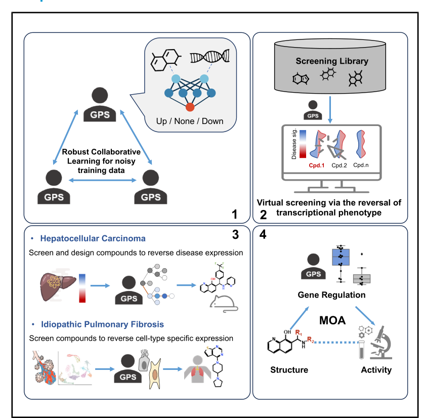
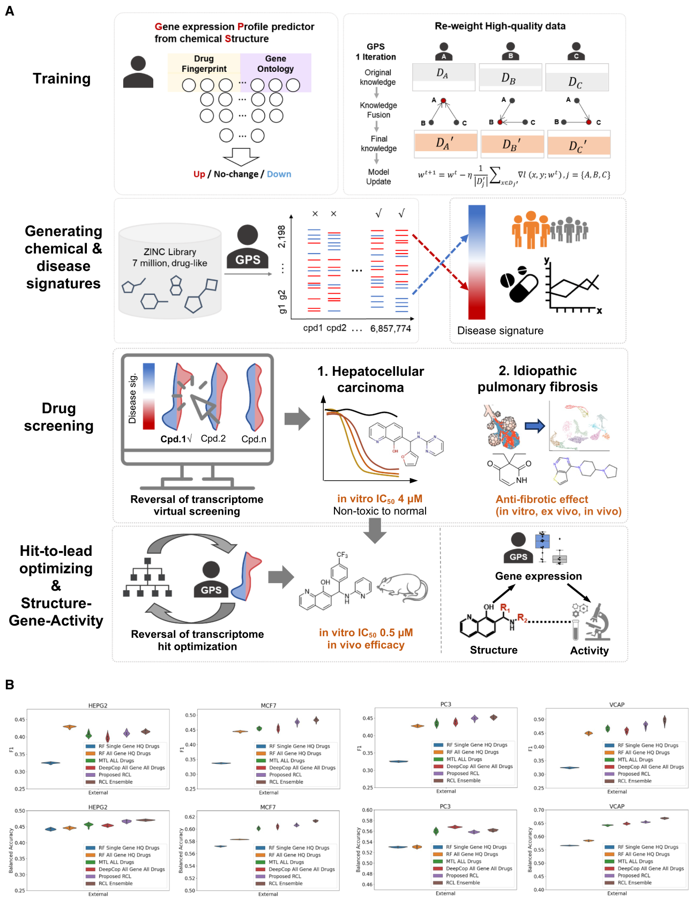
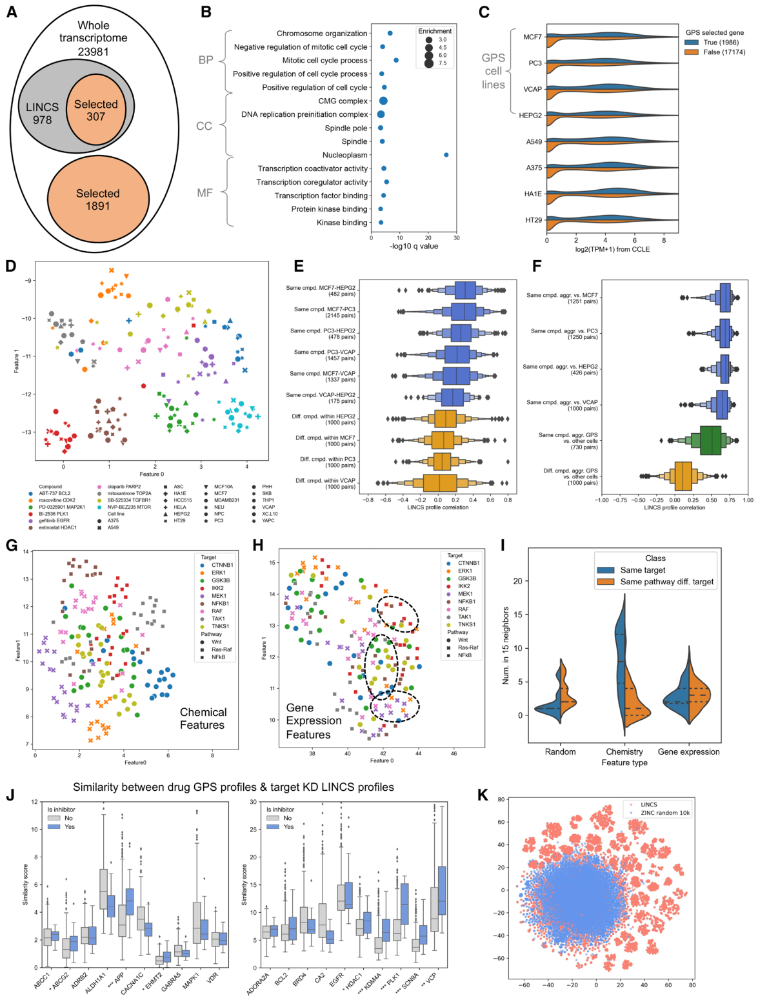
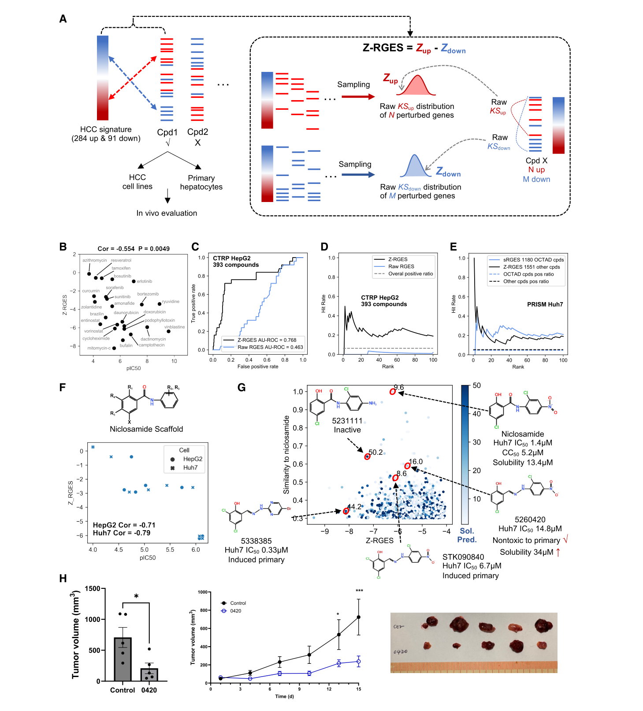
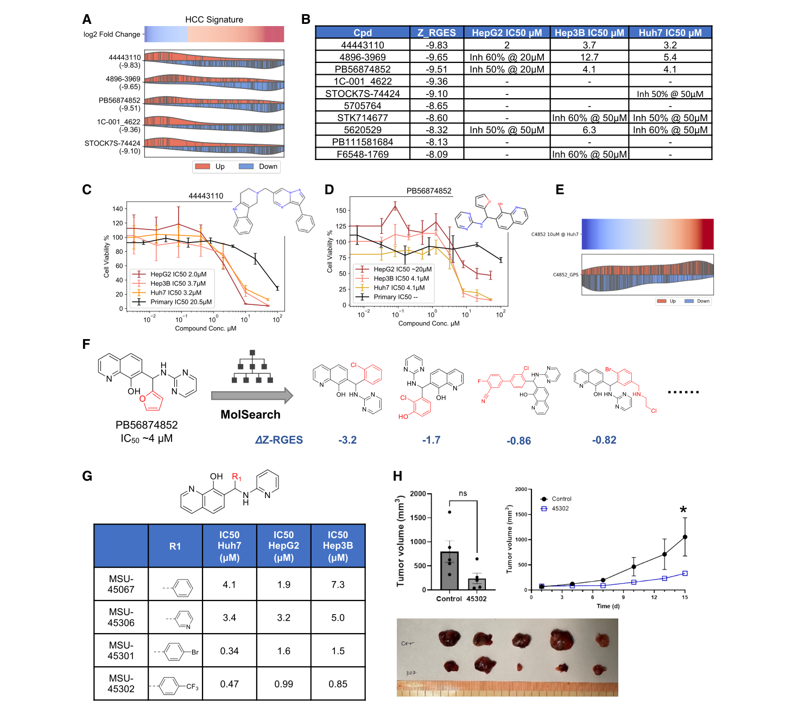
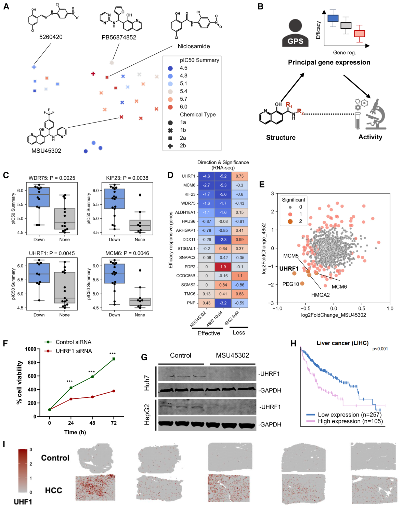
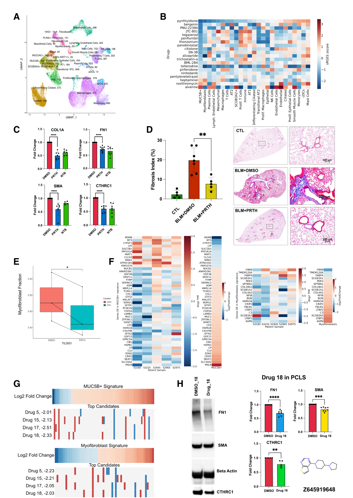

GPS (Xing 2026)
Chemical structure만으로 compound가 유발하는 transcriptomic signature를 예측하는 deep learning model GPS를 만들고, 약 700만 개 compound 중 Disease Signature를 reverse하는 hit을 찾아 lead까지 optimize한 연구. HCC와 IPF에서 in vitro, ex vivo, in vivo 검증까지 했다.
- Journal: Cell 189, 2556–2572 (2026-04-30), open access (CC BY 4.0)
- Lab: Michigan State University (Bin Chen lab 외), Stanford University. Co-first author 5명
- GPS = Gene expression Profile predictor on chemical Structures
Pipeline을 처음부터 따라가 보려면
수식, toy example, 설명 그림으로 단계별로 풀어 쓴 설명서: 2026 Xing - GPS (Pipeline)
Graphical abstract

네 단계 구성: 1 noisy data로 GPS 학습(RCL) → 2 Signature Reversal 기반 Virtual Screening → 3 HCC, IPF에 적용 → 4 structure–gene–activity로 MoA 해석
Background
- 기존 virtual screening은 대부분 특정 protein target에 대한 docking이거나, screening data로 학습한 ML model이다. Disease를 기술하는 데 널리 쓰이는 transcriptomic data는 거의 활용되지 않는다.
- Signature Reversal은 Drug Repurposing에 많이 쓰였지만, LINCS L1000처럼 이미 profiling된 compound에만 적용할 수 있다. Novel compound screening이나 lead optimization에는 쓸 수 없었다.
- 수백만 개 library compound의 expression profile을 실험으로 만드는 건 불가능하다. → Structure에서 expression을 예측하자.
Figure 1 · GPS framework와 model performance

A · 전체 pipeline (4단계)
- Training: Input = compound의 drug fingerprint + gene의 Gene Ontology(GO) term. Output = 그 compound가 그 gene을 Up / No-change / Down 중 무엇으로 바꾸는지 (3-class classification).
- Training data: LINCS L1000 phase I, compound effect 18,746개 × 978 landmark genes, cell line 4종(HEPG2, MCF7, PC3, VCAP).
- Label: Z score < −1.5 → down, > 1.5 → up, 나머지 no effect. Expression 값을 그대로 맞히는 대신 3-class로 바꿔 noise를 줄였다.
- 978개 중 structure로 predictable한 gene은 random forest로 골라 307개 (Data S1).
- Re-weight high-quality data (RCL, Robust Collaborative Learning): LINCS replicate 간 correlation이 약 0.5밖에 안 될 만큼 noise가 크다(Figure S1A–B). Low-quality data를 버리지 않고, 여러 peer network(A, B, C)가 knowledge fusion으로 data point weight를 조정하는 curriculum learning. 결과적으로 전체 data의 약 80%를 학습에 사용.
- Generating chemical & disease signatures: ZINC의 drug-like compound 6,857,774개에 대해 2,198 genes의 signature를 예측 → Disease Signature와 비교.
- Drug screening → Hit-to-lead optimizing & SGAR: HCC와 IPF에 적용 (Figure 3–6).
B · External validation (학습에 없던 compound)
- 4개 cell line 모두에서 F1과 balanced accuracy를 baseline과 비교: RF single gene, RF all gene, multi-task learning(MTL), DeepCop(all profile 사용), Proposed RCL, RCL Ensemble.
- RCL 계열이 가장 좋다. RCL과 baseline 차이는 모두 p < 1E−8.
- 해석:
- Gene별로 따로 model을 만들면(single gene) overfitting이 심하다. Gene 정보(GO)를 input에 넣어 한 model로 학습하면 크게 줄어든다.
- High-quality data만 쓰거나(RF-HQ) 전부 그대로 쓰는 것(DeepCop)보다, RCL처럼 re-weight하는 게 낫다.
- 참고 (Tables S2–S4): GNN이나 transformer 기반 molecular embedding은 단순한 structural fingerprint보다 낫지 않았다. RF는 “seen” compound에서는 최고, “unseen” compound에서는 최하.
Takeaway · Noise가 큰 LINCS data를 버리지 않고 re-weight하면, 처음 보는 compound의 expression 변화도 structure만으로 어느 정도 예측할 수 있다.
Figure 2 · GPS-predicted signature의 biological relevance

A–C · 어떤 gene이 잘 예측되나
- GO feature 1,107개로 gene을 embedding해 978개 밖의 gene까지 예측 범위를 넓혔다. Calibration dataset(drug 45개 × cell line 23개, whole transcriptome)으로 잘 맞는 gene 2,018개를 골라, training gene과 합쳐 총 2,198 genes를 high confidence로 예측 (A).
- 이 gene들은 nucleoplasm, cell cycle, spindle에 enrich (B). Cell cycle, transcription, kinase signaling 관련 gene이 compound perturbation에 더 잘 반응한다는 뜻.
- 잘 예측되는 gene은 basal expression이 더 높다 (C).
D–F · Cell line이 달라도 signature가 보존되나
- 같은 compound는 cell line이 달라도 signature가 비슷하게 모이고 (D), correlation이 다른 compound끼리보다 높다 (E).
- 여러 cell line profile을 합친 aggregated profile은 개별 profile과 잘 correlate한다 (F). → GPS가 4개 cell line 예측을 합쳐 쓰는 근거.
G–I · Chemical space vs transcriptional space
- Wnt, Ras-Raf, NF-κB pathway의 9개 target inhibitor를 비교.
- Chemical feature(ECFP6)로 보면 같은 target끼리 모인다 (G).
- GPS-predicted expression으로 보면 target이 달라도 같은 pathway끼리 모인다 (H, I).
- → 예측된 expression이 compound의 biological process를 담고 있다는 근거.
J · Target 찾기 가능성
- 20개 target 중 8개에서, inhibitor의 GPS-predicted profile이 그 target gene의 shRNA knockdown profile과 유의하게 더 비슷했다.
K · Library coverage
- ZINC 약 700만 개 compound는 LINCS training compound와 일부 겹치지만 상당 부분이 새로운 chemical space다.
Takeaway · 예측된 signature는 단순한 숫자가 아니라 pathway 수준의 biology를 반영한다. 그래서 screening에 쓸 만하다.
Figure 3 · Z-RGES 검증과 niclosamide analog

A · Workflow와 Z-RGES
- HCC signature: 284 up, 91 down genes.
- 기존 RGES는 compound가 바꾸는 gene 수에 민감해서, compound마다 예측 gene 수가 다른 GPS에는 그대로 쓸 수 없다.
- Z-RGES = Z_up − Z_down: 같은 개수(N up, M down)의 gene을 random sampling해서 만든 raw KS 분포에 대해 Z-transform. 더 negative일수록 disease signature를 잘 reverse한다.
B–E · Z-RGES가 실제 drug efficacy를 반영하나
- 보고된 compound들의 anti-HCC activity(pIC50)와 correlation: R = −0.554, p = 0.0049 (B). Raw RGES는 유의하지 않음 (Figure S2A).
- CTRP HepG2 393 compounds: Z-RGES AUROC 0.768 vs raw RGES 0.463 (C). Top hit rate 약 40%, raw RGES는 random 수준 (D).
- PRISM Huh7: 실측 profile 기반 sRGES(OCTAD)와 비교해 top 10 hit rate가 약간 높다 (E).
- Colon adenocarcinoma, Alzheimer’s disease에서도 effective drug일수록 Z-RGES가 낮았다 (Figure S2C–E). 단 결과가 disease signature를 어떻게 만드느냐에 크게 좌우된다.
F–G · Niclosamide analog pilot
- Niclosamide: 이전 repurposing 연구의 anti-HCC hit. Water solubility가 낮고 therapeutic window가 좁아 개발이 멈췄다.
- Analog 7개의 Z-RGES와 pIC50이 correlate: HepG2 R = −0.71, Huh7 R = −0.79 (F).
- ZINC에서 solubility가 더 좋고 Z-RGES가 비슷한 analog 탐색 (G):
- Niclosamide: Huh7 IC50 1.4 μM, CC50 5.2 μM, solubility 13.4 μM
- 5338385: Z-RGES −8.13, Huh7 IC50 0.33 μM로 강하지만 primary hepatocyte growth를 유도
- 5260420: Huh7 IC50 14.8 μM로 약하지만, primary hepatocyte에 nontoxic, solubility 34 μM ↑ → in vivo로 진행
H · In vivo
- Huh7 subcutaneous xenograft에 5260420을 intratumoral 투여(1 μg, 3일마다, 2주) → tumor volume 유의하게 감소.
Takeaway · Z-RGES 보정이 핵심이다. Raw RGES는 예측 profile에서 쓸모가 없었지만 Z-RGES는 실제 activity와 correlate한다.
Figure 4 · Large-scale HCC screening과 hit-to-lead optimization

A–B · ZINC 700만 개 screening
- Non-selective compound를 피하려고, HCC에서 over-expressed된 gene을 더 올리는 profile에는 penalty를 줬다 (Figure S4B).
- 구조가 다양하고 ChEMBL의 기존 anti-HCC compound와 닮지 않은 18개를 실험 → 1/3이 HepG2, Huh7, Hep3B 3종 모두 유의하게 억제 (Figure S4D). 사전 예측 hit rate 40%와 비슷.
- Top 10 candidate의 Z-RGES는 −9.83 ~ −8.09 (B).
C–D · 대표 hit
| Compound | Z-RGES | HepG2 | Hep3B | Huh7 | Primary hepatocyte |
|---|---|---|---|---|---|
| 44443110 | −9.83 | 2.0 μM | 3.7 μM | 3.2 μM | 20.5 μM |
| PB56874852 | −9.51 | ~20 μM | 4.1 μM | 4.1 μM | 100 μM에서도 영향 없음 |
- PB56874852는 normal hepatocyte에 대한 selectivity가 niclosamide보다 좋다.
E · Prediction vs 실측 RNA-seq
- PB56874852 10 μM 처리 Huh7 RNA-seq의 DE gene 패턴이 GPS 예측과 비슷했다. 4 μM은 DE gene이 너무 적어 correlation 없음 (Figure S4F). GPS가 10 μM data로 학습됐다는 점과 맞는다.
F · MolSearch로 analog 설계
- MolSearch: Monte Carlo Tree Search 기반 2-stage multi-objective hit-to-lead optimization algorithm. 목표는 Z-RGES를 개선하면서 medicinal chemistry property를 유지하는 것.
- Furan을 halobenzene으로 바꾼 analog들의 ΔZ-RGES: −3.2, −1.7, −0.86, −0.82.
G · 합성한 analog의 IC50 (μM)
| Compound | R1 | Huh7 | HepG2 | Hep3B |
|---|---|---|---|---|
| MSU-45067 | benzene | 4.1 | 1.9 | 7.3 |
| MSU-45306 | pyridine | 3.4 | 3.2 | 5.0 |
| MSU-45301 | para-bromobenzene | 0.34 | 1.6 | 1.5 |
| MSU-45302 | CF₃-benzene | 0.47 | 0.99 | 0.85 |
- MSU45302: 3종 모두 sub-μM. First-line target therapy인 sorafenib보다 몇 배 강하다 (Figure S5A).
- PK: 100 mg/kg oral에서 Cmax 29 μmol/L, t1/2 2.5 h (Figure S5B–C).
H · In vivo
- Huh7 xenograft에 MSU45302 intratumoral 투여(1 μg, 3일마다, 2주) → growth curve상 day 15에 유의한 감소(*). 단, endpoint tumor volume bar는 “ns”로 표시되어 있다.
Takeaway · Screening으로 찾은 hit(PB56874852, IC50 ~4 μM)을 MolSearch로 개선해 sub-μM lead(MSU45302)를 만들었다. AI 예측 → 합성 → 검증까지 한 사이클을 실제로 돌렸다.
Figure 5 · SGAR과 MoA (UHRF1)

A · Predicted signature로 compound clustering
- Anti-HCC compound 26개(MSU45302 analog 15개 포함)의 GPS-predicted signature를 UMAP으로 시각화.
- Efficacy가 중간인 compound는 같은 chemical series끼리 모였다. 반면 efficacy가 높은 compound는 scaffold가 달라도 함께 모였다(예: niclosamide와 MSU45302).
B · SGAR (Structure–Gene–Activity Relationship)
- 전통적인 SAR(structure–activity relationship) 사이에 gene expression을 끼워 넣은 이 논문의 분석법. Structure → gene regulation → activity 연결을 본다.
C–E · Activity와 연관된 gene
- Transcriptome-wide association으로 activity와 유의하게 연관된 gene 15개 발견: WDR75, KIF23, UHRF1, MCM6 등 (C).
- MSU45302 in vivo xenograft RNA-seq과 PB56874852 in vitro RNA-seq에서도 같은 방향의 변화 확인 (D, E). UHRF1이 가장 유의하게 변했다.
F–G · UHRF1 검증
- UHRF1 knockdown → HepG2 viability 감소 (F).
- MSU45302 처리 후 UHRF1 protein 감소 (Huh7 5 μM, HepG2 10 μM; western blot, G).
H–I · Clinical relevance
- UHRF1 high expression은 liver cancer 환자의 불량한 prognosis와 연관 (Human Protein Atlas, H).
- Spatial transcriptomics에서 HCC tissue에 UHRF1이 넓게 발현 (I).
- UHRF1은 RING-finger E3 ubiquitin ligase이자 DNA methylation의 핵심 regulator. MSU45302가 부분적으로 UHRF1 억제를 통해 작용한다고 해석.
Takeaway · Phenotypic screening과 달리 예측 transcriptome이 같이 있어서, target을 몰라도 MoA 후보(UHRF1)를 좁힐 수 있었다. 다만 direct binding은 증명하지 않았다.
Figure 6 · IPF: cell-type-specific signature reversal

A · Cell-type-specific disease signature
- IPF lung Single-cell RNA-seq (control 10명, IPF 12명; Habermann et al.)에서 cell type별로 IPF vs control DE analysis (|log2FC| > 1, adjusted p < 0.05).
- Healthy lung에 없는 cell type(KRT5−/KRT17+, transitional AT2)은 IPF 환자 안의 neighboring cell type과 비교해 signature를 만들었다.
- BLM-induced fibrosis mouse model과 human bulk RNA-seq signature도 함께 사용.
B–E · Repurposing candidate: pyrithyldione
- OCTAD pipeline으로 기존 drug 20개를 골라 mouse PCLS에서 시험 → human PCLS로 진행.
- Heatmap(B): drug × cell-type signature의 reversal score. Pyrithyldione은 MUC5B+ epithelial cell signature를 가장 강하게 reverse했다.
- Human PCLS에서 fibrosis marker(COL1A, FN1, SMA, CTHRC1)를 줄였고, 효과가 승인 약 nintedanib(NTB)과 비슷 (C). 환자 8명의 PCLS에서 일관됨.
- BLM mouse model에서 fibrosis index 감소 (D; 100 μM, oropharyngeal aspiration, 매일 2주).
- PCLS bulk RNA-seq을 CIBERSORTx로 deconvolution → myofibroblast fraction 감소 (E).
- 주의: pyrithyldione은 life-threatening side effect 가능성이 있어 그대로 clinical trial로 가기는 어렵다.
F · 무엇이 reverse됐나
- MUC5B+ epithelial cell signature에서 reverse된 gene이 myofibroblast보다 훨씬 많았다. GO 분석상 iron ion transport pathway가 관여 → IPF에서 iron metabolism의 역할을 시사.
G–H · Novel compound: drug 18
- MUC5B+ epithelial signature와 myofibroblast signature를 둘 다 reverse하도록 Enamine HTS library를 screening.
- Top 40 → medicinal chemistry filter(structural liability, mutagenicity, cLogP) → 19개 실험 → 4개가 한 환자 PCLS에서 marker 감소 (G).
- Drug 18: 새로운 scaffold. 여러 환자 PCLS에서 10 μM로 FN1, SMA, CTHRC1을 유의하게 감소 (H).
Takeaway · Single-cell data로 cell type별 signature를 만들면 여러 cell population을 동시에 겨냥하는 compound를 찾을 수 있다. Repurposing(pyrithyldione)과 novel compound(drug 18)를 모두 보여 줬다.
Limitations
저자들이 밝힌 한계:
- LINCS training data가 978 landmark genes, cell line 4종, 주로 10 μM·24 h 조건에 한정된다. 다른 조건에서는 성능이 떨어진다 (Figure S1F).
- GPS는 structure와 transcriptional change의 correlation을 학습한 것이지 mechanistic causality를 밝히지 않는다.
- SGAR은 direct ligand–protein binding을 알려 주지 않는다. AlphaFold 3 같은 structure-based modeling과 보완해야 한다.
- Transcriptomic prediction만으로는 drug activity와 side effect를 다 설명할 수 없다. 다른 omics 통합이 필요하다.
- 찾은 compound들은 clinical trial까지 추가 preclinical validation이 필요하다.
Data & Code
- RNA-seq: GEO GSE291867, GSE291190, GSE291833
- 구성: (1) RCL, (2) GPS4Drug, 그 외 screening·optimization tool. Web portal과 Docker container를 공개했다고 밝힘.
내 생각 / 질문
관련 개념
Disease Signature · Signature Reversal · Connectivity Map · Drug Repurposing · LINCS L1000 · Compound Library · Single-cell RNA-seq · Molecular Fingerprint · Virtual Screening · RGES · Hit-to-Lead Optimization · Monte Carlo Tree Search · Mechanism of Action · IC50 · Xenograft Model · Precision-Cut Lung Slices · Target-based vs Phenotypic Screening